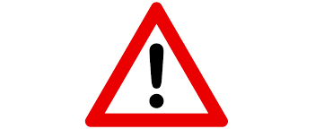

{% extends "layout.html" %}

{% block body %}
<fieldset>
    <div class="content">
        <h3>{{question[1]}}</h3>
        <a href="/complaint-question"></a>
        {% if question[6] %}
            <br>
            <div class="hovereffect" style="width: 500px;">
                
                <div class="overlay">
                    <p>
                        <a href="#">
                            <i class="fa fa-twitter"></i>
                        </a>
                        <a href="#">
                            <i class="fa fa-facebook"></i>
                        </a>
                        <a href="#">
                            <i class="fa fa-instagram"></i>
                        </a>
                        <a href="#">
                            <i class="fa fa-youtube"></i>
                        </a>
                    </p>
                </div>
            </div>
        {% endif %}
        <br><br><br><br><br><br><br><br><br>
        <p>{{question[2] | safe}}</p>
    </div>

    <div class="info">
        <p>Kullanıcı Adı: {{question[3]}}</p>
        <p>Ders: {{question[4]}}</p>
        <p>Tarih: {{question[5]}}</p>
    </div>
</fieldset>
<br><br>

{% include "includes/comment.html" %}

<!-- {% if commentID != "0" %}

    <input type="text" id="commentID" value="{{commentID}}" hidden>
    <script src="https://code.jquery.com/jquery-3.2.1.slim.min.js" integrity="sha384-KJ3o2DKtIkvYIK3UENzmM7KCkRr/rE9/Qpg6aAZGJwFDMVNA/GpGFF93hXpG5KkN" crossorigin="anonymous"></script>
    <script type="text/javascript">
        /*$(document).ready(function(){
            //Tıklanan menünün link değerini alıyoruz (#menu_1,#menu_2 vb.)
            var commentID = document.getElementById("commentID").value;
            console.log(commentID)

            //paragrafdaki id'nin pozisyon değerini alıyoruz
            var commentPos = $("#" + commentID).position().top;
            console.log(commentPos)
            console.log("#"+commentID)
            
            //Yazı alanın o durumdaki scrollTop değerini alıyoruz
            var cur_pos = $('#' + commentID).scrollTop();
            console.log(cur_pos)

            //Tıklanan menüye göre yapılması gerekn scrollTop değeri
            var total_scroll = cur_pos + commentPos;
            console.log(total_scroll)

            //Yazımızın içeriğini animasyonla kaydırıyoruz
            $(document).scrollTop(total_scroll)
        })*/
    </script>
{% endif %} -->

{% endblock body %}